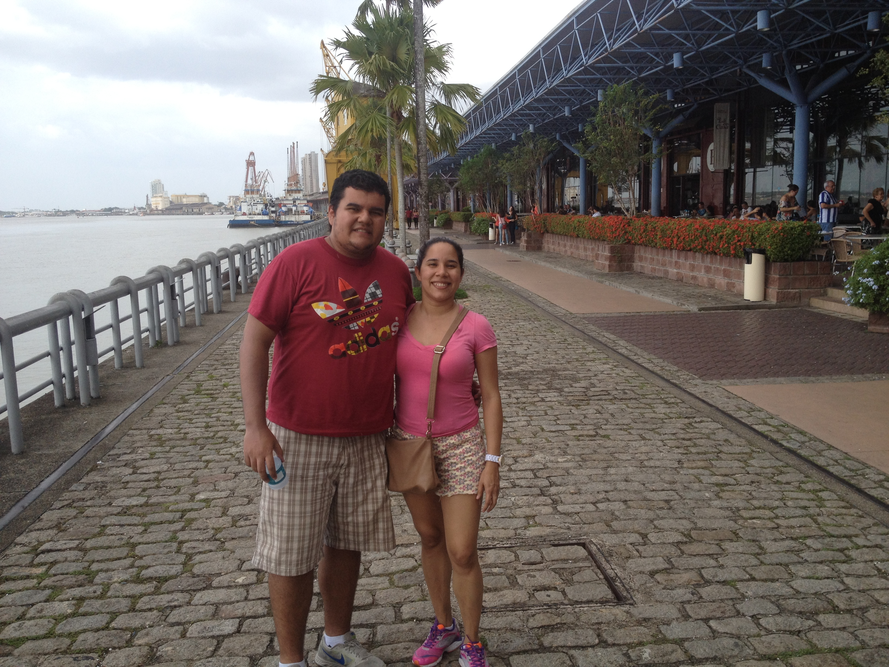

|
I lived in Argentina for 9 years where I studied digital marketing. What I love most about Argentina is the diversity they have. There's always something new to do or to know. 
|
|
After Argentina, I moved to Belem do Pará, in the north of Brazil. It's always hot there, like really hot. I loved the food there, but mostly the nature they have – beaches, rivers, and even falls to have fun on.  |
|
After Brazil, I came to Colombia intending to visit my brother. However, the quarantine started, and here I am almost 3 years later, settled and working hard. |
Current JobRight now, I'm working for bet365, a gambling company that I love. I'm passionate about sports, and the gambling world is vast, so there's always something new to learn. My goal is to continue working with them as a Fullstack developer. |